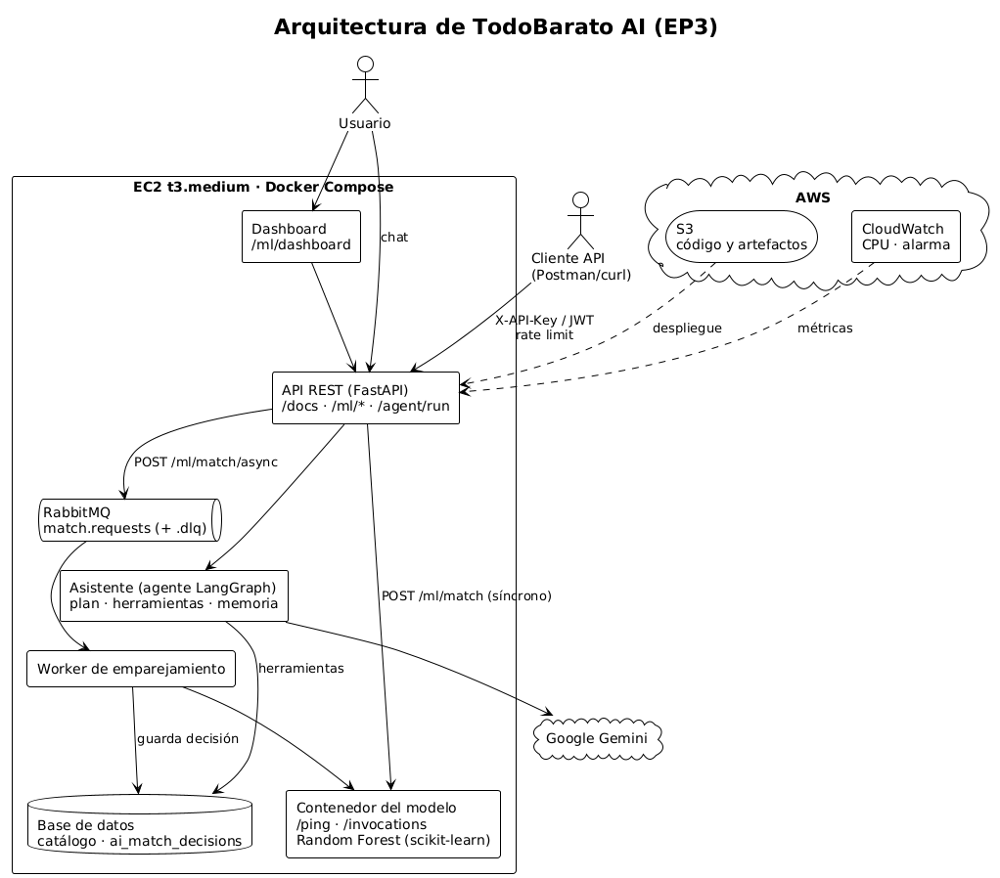
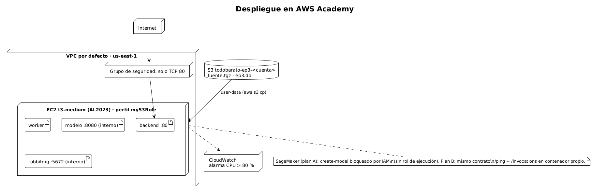
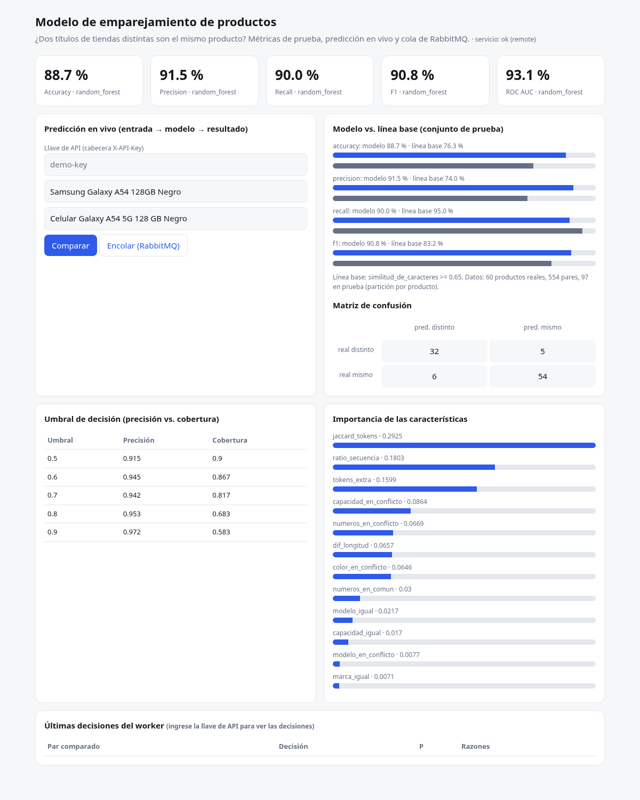

Figura 2. Diagrama de secuencia del flujo asíncrono.
Evaluación Parcial 3 · ITY1102 Arquitectura de Sistemas de Inteligencia Artificial
Equipo 1: Nicolás Estefanía, Diego Tapia y Ariel Espinoza
Repositorio: github.com/niKo-ing/PROYECTOENGINEER-AI (rama master) · Notebook de entrenamiento en Colab: EP3_ITY1102/notebooks/EP3_ITY1102_Colab.ipynb
TodoBarato AI compara precios de productos tecnológicos entre tiendas chilenas. Su problema técnico central es decidir si dos títulos de tiendas distintas describen el mismo producto (por ejemplo «Galaxy A54 128 GB Negro» y «Celular Samsung A54 5G 128GB»): un error aquí mezcla precios de productos distintos y la recomendación pierde valor. En la EP1 y la EP2 se diseñó y desplegó la arquitectura base y un agente LangGraph; en esta entrega se agrega y se pone a operar un modelo propio de clasificación (Random Forest, scikit-learn) con su contenedor, API REST segura, comunicación asíncrona con RabbitMQ, dashboard interactivo, pruebas y un script de despliegue en AWS.
Además se unificó el chat de IA y el agente en un único asistente (/chat) y se limpió el repositorio.
EP3_ITY1102/infra/desplegar.sh:
versión escalable (ALB + Auto Scaling + HTTPS por CloudFront) con infra/desplegar_asg.sh y versión de una instancia con desplegar.sh; las direcciones del laboratorio cambian al recrearse y se recrean con los scripts.
SageMaker no pudo usarse: el laboratorio deniega CreateModel, CreateEndpoint e iam:PassRole. Por indicación del docente, el entrenamiento gestionado se hace en Google Colab
y la inferencia, en el contenedor con contrato SageMaker sobre EC2 con Auto Scaling (sección 6).Decisión que apoya: qué ofertas se agrupan bajo un mismo producto para calcular el mejor precio y el historial. Hoy el emparejador determinista
(app/catalog/matching.py) usa GTIN, MPN y marca+modelo; cuando la tienda no los publica el resultado queda «ambiguo» y se derivaba a un LLM. El modelo propio
resuelve esa zona gris con costo y latencia mucho menores y con una explicación auditable.

| Componente | Tecnología | Por qué |
|---|---|---|
| API REST | FastAPI + OpenAPI (/docs) (Ramírez, s. f.) | Contrato documentado automáticamente, validación con Pydantic |
| Modelo | scikit-learn (Pedregosa et al., 2011) Random Forest (Breiman, 2001), contenedor propio con contrato /ping + /invocations | Mismo contenedor sirve en SageMaker o EC2; tabular + poco dato: un bosque supera a una red neuronal |
| Mensajería | RabbitMQ (cola durable, ack manual, DLQ) | Desacopla la ingesta del cómputo del modelo; Amazon MQ y SQS están bloqueados en el laboratorio |
| Asistente | LangGraph + Gemini | Plan priorizado, herramientas, memoria (corto y largo plazo) |
| Dashboard | HTML servido por la API (/api/v1/ml/dashboard) | Sin Node en el servidor; un solo despliegue |
Se ingestaron 60 productos reales de Paris (notebooks, celulares y accesorios) con los conectores del proyecto. Con ellos se generan 554 pares etiquetados (374 entrenamiento, 97 prueba, partición por producto para que ningún producto aparezca en ambos lados): positivos = el mismo título reescrito como lo haría otra tienda (sin marca, palabras en otro orden, abreviaturas, relleno comercial, erratas y datos faltantes); negativos difíciles = misma marca con otro modelo, otra capacidad o RAM y otro color (en el catálogo cada color es una oferta distinta); negativos fáciles = productos al azar.
ai_match_decisions acumula decisiones auditables para etiquetarlos).12 características calculadas solo del texto (similitud de secuencia, Jaccard de palabras, marca, código de modelo, números y capacidades en conflicto, color, largo, palabras extra). Cada predicción devuelve las razones en lenguaje natural (p. ej. «las capacidades (GB/TB) son distintas: es otra variante»), útil para auditar la decisión.
| Característica | Importancia |
|---|---|
| jaccard_tokens | 0.2925 |
| ratio_secuencia | 0.1803 |
| tokens_extra | 0.1599 |
| capacidad_en_conflicto | 0.0864 |
| numeros_en_conflicto | 0.0669 |
| dif_longitud | 0.0657 |
Búsqueda en malla con validación cruzada agrupada por producto (5 pliegues, métrica F1). Semilla fija (7).
| Modelo | Mejores hiperparámetros | F1 (CV) |
|---|---|---|
| logistic_regression | {"C": 10.0} | 0.901 |
| random_forest | {"max_depth": 12, "n_estimators": 100} | 0.910 |
| gradient_boosting | {"learning_rate": 0.05, "max_depth": 2, "n_estimators": 100} | 0.908 |
Modelo elegido: random_forest.
| Accuracy | Precision | Recall | F1 | ROC AUC | |
|---|---|---|---|---|---|
| Random Forest | 0.8866 | 0.9153 | 0.9 | 0.9076 | 0.9309 |
| Línea base (similitud_de_caracteres >= 0.65) | 0.7629 | 0.7403 | 0.95 | 0.8321 | 0.8291 |
Matriz de confusión: TN = 32, FP = 5, FN = 6, TP = 54. El modelo mejora la línea base en precisión (+18 pp) y F1 (+7.6 pp); la regla simple tiene más recall pero a costa de muchos falsos positivos (mezclar productos distintos), el error más caro para el negocio.
| Tipo de par | n | Aciertos |
|---|---|---|
| negativo_azar | 8 | 100 % |
| negativo_color | 5 | 100 % |
| negativo_marca | 9 | 100 % |
| negativo_variante | 15 | 67 % |
| positivo | 60 | 90 % |
Punto débil: las variantes cuando una tienda omite la capacidad en el título; es la principal oportunidad de mejora (sección 7).
La decisión es match si P ≥ 0,70, no_match si P ≤ 0,35 y ambiguous entre ambos (se deja a revisión, igual que el emparejador determinista).
El 0,70 se eligió con esta tabla: precisión ≈ 0,94 conservando ≈ 82 % de los positivos.
| Umbral | Precisión | Cobertura de positivos |
|---|---|---|
| 0.5 | 0.915 | 0.9 |
| 0.6 | 0.945 | 0.867 |
| 0.7 | 0.942 | 0.817 |
| 0.8 | 0.953 | 0.683 |
| 0.9 | 0.972 | 0.583 |
| Endpoint | Descripción |
|---|---|
POST /api/v1/ml/match | Decisión síncrona (decision, probability, reasons, model_version) |
POST /api/v1/ml/match/async | Encola el par en RabbitMQ y responde 202 con el request_id |
GET /api/v1/ml/decisions | Últimas decisiones guardadas y profundidad de la cola |
GET /api/v1/ml/metrics · /health | Métricas del modelo y estado (públicos) |
POST /api/v1/agent/run | Asistente unificado (chat + agente), con tarjetas de producto y traza |
Seguridad. Autenticación con JWT de Supabase o llave de API (X-API-Key, comparación en tiempo constante); límite de tasa por llamador con ventana deslizante (429 + Retry-After);
validación estricta de entradas (422); TLS terminado en el borde (CloudFront/ALB) y puertos internos (RabbitMQ, modelo) sin exponer en el grupo de seguridad (solo TCP 80).
Resiliencia. Mensajes persistentes con ack manual; tras 3 fallos pasan a la cola .dlq; el cliente del modelo traduce fallos a 503.
Interoperabilidad. La API consume el modelo por HTTP (MATCH_MODEL_URL), así el mismo código funciona contra el contenedor local, EC2 o un endpoint de SageMaker.
La suite completa tiene 1.110 pruebas que pasan (5 se omiten porque requieren Gemini o un PostgreSQL reales); 20 son del modelo, la API y la cola (tests/modelo_ml/). Diez casos representativos:
| # | Caso | Entrada | Esperado | Resultado |
|---|---|---|---|---|
| 1 | Autenticación | POST /ml/match sin llave o con una llave inválida | 401 | ✔ |
| 2 | Validación de entrada | cuerpo vacío, sin el título b o con un título de 301 caracteres | 422 en los tres | ✔ |
| 3 | Límite de tasa por llamador | 4 llamadas con límite 2/min, cambiando X-Forwarded-For en cada una | 200, 200, 429, 429 y Retry-After | ✔ |
| 4 | Ventana deslizante | tercera llamada dentro de la ventana de 10 s y otra a los 11 s | bloquea ~10 s y luego libera | ✔ |
| 5 | Mismo producto reescrito | «Samsung Galaxy A54 128GB Negro» / «Celular Galaxy A54 5G 128 GB Negro» | match, P ≥ 0,70 | ✔ |
| 6 | Otra variante | «Apple iPhone 13 128GB Negro» / «… 256GB Negro» | no_match, P ≤ 0,35 y razón «capacidades distintas» | ✔ |
| 7 | Conflictos de atributos | capacidad, color (Indigo/Amarillo) y código de modelo (15IAH8/14ABR9) distintos | la característica de conflicto vale 1 | ✔ |
| 8 | Lote | 2 pares en una sola llamada | mismo orden y campos decision, probability, reasons, model_version | ✔ |
| 9 | Flujo asíncrono (integración) | POST /ml/match/async → cola → worker → modelo → base de datos | 202 con la cola; decisión match guardada | ✔ |
| 10 | Cola de mensajes fallidos | un mensaje cuyo procesamiento falla 3 veces | sale de la cola y queda en .dlq | ✔ |
| Escenario (local, Docker) | Peticiones | Fallos | req/s | p50 ms | p95 ms | p99 ms |
|---|---|---|---|---|---|---|
| 20 usuarios · antes de la corrección | 3754 | 44 | 85 | 59 | 110 | 140 |
| 20 usuarios · después | 3805 | 0 | 86 | 58 | 110 | 140 |
| 10 usuarios | 1348 | 0 | 46 | 26 | 76 | 100 |
| 50 usuarios | 3359 | 0 | 116 | 190 | 430 | 520 |
| 100 usuarios | 3322 | 0 | 114 | 390 | 890 | 1100 |
| 100 usuarios · API con 4 workers | 3452 | 0 | 119 | 320 | 1100 | 1300 |
| AWS (EC2 t3.medium, carga desde otro continente: incluye ≈ 250 ms de red) | ||||||
| 20 usuarios | 1728 | 0 | 39 | 280 | 570 | 1100 |
| 50 usuarios | 3539 | 0 | 80 | 330 | 610 | 2500 |
| 100 usuarios | 4487 | 0 | 102 | 560 | 1100 | 1400 |
| AWS con Auto Scaling Group + ALB (2 → 4 réplicas t3.medium) | ||||||
| 150 usuarios · 7 min | 96700 | 0 | 230 | 400 | 900 | 1100 |
Hallazgo. La primera corrida mostró 44 errores 500 (11,4 %) en /ml/match/async: pika.BlockingConnection no es seguro entre hilos y FastAPI atiende en un pool de hilos
(StreamLostError … pop from an empty deque). Se serializó el acceso al canal con un candado, se agregó reconexión y declaración única de colas: con la misma carga, 0 fallos en 3 870 peticiones.
/ping trivial midió pocas decenas de req/s) y subir la API a 4 workers no cambió el rendimiento.
Las filas de AWS son la medición válida de capacidad: la latencia incluye ≈ 250 ms de ida y vuelta entre Chile y us-east-1 (p50 de 280 ms con 20 usuarios), y el rendimiento sube con los usuarios (≈ 39 → 80 → 102 req/s) con 0 fallos.
CloudWatch registró, durante la carga, CPU media 54,9 % y máxima 77,2 % en la t3.medium: cerca del límite, por lo que ~100 req/s es la capacidad práctica de una instancia (la alarma al 80 % no se alcanzó) y por eso se desplegó la versión escalable que sigue.
Una primera corrida de 20 usuarios mostró 216 errores «conexión rechazada» durante los 5 s iniciales: coincidieron con el reinicio del backend del arranque, no con la carga (se repitió sin fallos; la corrida inicial se conserva como aws_u20_arranque).Límite de tasa en AWS. 800 peticiones con una sola llave (límite 600/min) dieron 547 × 200 y 253 × 429. Al preparar esta prueba se detectó que el límite confiaba en X-Forwarded-For, que un cliente directo puede falsificar para evadirlo;
se corrigió para limitar por identidad del llamador (usuario o llave) y hay una prueba que lo verifica.
Escalado automático (medido). Con infra/desplegar_asg.sh se creó un ALB (chequeo /ml/health), un Auto Scaling Group (2–4 réplicas, política de seguimiento de CPU al 50 %), RDS PostgreSQL compartido, una instancia de servicios (RabbitMQ + worker) y CloudFront con HTTPS.
Con 150 usuarios la CPU pasó de 2 % a 95 % y, a las 13:38:41 UTC, la alarma de la política subió la capacidad de 2 a 4 instancias (evidencia/asg-escalado.txt). Resultado: 96 700 peticiones, 0 fallos, 230 req/s (más del doble de una instancia sola), p50 400 ms, p95 900 ms, p99 1 100 ms desde Chile.
Límite: la carga se generó desde un solo equipo y la CPU llegó a saturarse (≈ 99 %) hasta que las réplicas nuevas entraron en servicio; con tope de 4 instancias el sistema alcanza su máximo configurado, no el máximo posible.
Un par: ≈ 5 ms; lote de 64 pares: ≈ 11 ms (0,17 ms/par). El procesamiento por lotes es la optimización más barata para la ingesta masiva.
El asistente (agente LangGraph, ahora unificado con el chat) arma un plan con prioridades P1–P3 (P1: preferencias y búsqueda; P2: ofertas e historial de precio; P3: guardar y responder) y, tras cada herramienta, reflexiona: si cambian las condiciones, replanifica y reordena.
Escenarios automatizados con modelo guionado (tests/agent/test_escenarios_agente.py, sin red), «entrada → decisión → por qué»:
| Entrada | Qué observó | Decisión y por qué |
|---|---|---|
| «Notebook Lenovo, presupuesto $400.000. Arma una lista.» | $349.990; a < 3 % del mínimo histórico | Plan sin replanes (5 pasos): guarda la lista porque está en el presupuesto y el precio es bueno |
| «Notebook gamer, $300.000. Avísame cuando baje.» | 0 resultados → luego el más barato cuesta $349.990 (sobre el presupuesto) | 2 replanes (sin_resultados: ampliar términos; sobre_presupuesto: alerta). Crea una alerta a $300.000 e informa que faltan $49.990 |
| «ASUS TUF, $900.000. Guarda la lista si conviene.» | $799.990, 9,3 % sobre el promedio histórico ($731.990) | Replan por precio_alto: sube a P1 la adaptación, no guarda la lista y deja una alerta a $731.990 («esperar») |
| «Prefiero Samsung y no Huawei…» y, en otro hilo, «Recomiéndame un celular» | Memoria de largo plazo: relevancia 1,0 | El segundo hilo busca Samsung sin que se lo repitan |
La pantalla /chat resume esos pasos en lenguaje simple sobre cada respuesta y, en «Detalle técnico», muestra el plan con sus prioridades y cada herramienta en orden.
SageMaker (plan A). Se diseñó el modelo con el contrato de SageMaker (Amazon Web Services, s. f.): /ping, /invocations y el artefacto model.tar.gz en /opt/ml/model. El intento real falló:
sagemaker:CreateModel → AccessDeniedException; la simulación de IAM del rol del laboratorio también deniega CreateEndpoint, iam:PassRole y ecr:CreateRepository, y no existe un rol de ejecución
(evidencia/sagemaker-intento.txt, tres sesiones entre el 16 y el 23-11, generado por infra/intentar_sagemaker.sh).
Solución aplicada, por indicación del docente: el entrenamiento gestionado corre en Google Colab (notebooks/EP3_ITY1102_Colab.ipynb: datos, búsqueda de hiperparámetros, métricas, matriz de confusión y model.tar.gz;
con la semilla fija reproduce exactamente las métricas del modelo desplegado) y la inferencia corre en el mismo contenedor con contrato SageMaker sobre EC2 con Auto Scaling, que migra a un endpoint de SageMaker sin cambios de código.
El mismo notebook consume la API desplegada en AWS. Para el lenguaje natural, el asistente usa Gemini (IA como servicio por API).
| Opción | Costo aprox.* | Escalado | Flexibilidad |
|---|---|---|---|
| Google Colab (entrenamiento) | Gratis en el plan base | Una sesión; GPU opcional | Alta para entrenar; no sirve para inferencia continua (sesiones efímeras) |
| EC2 t3.medium + Docker (inferencia, desplegado) | ≈ USD 0,04/h por instancia; stack escalable ≈ USD 0,15–0,25/h | ASG + ALB (medido: 2 → 4 réplicas) | Alta: cualquier contenedor |
| SageMaker ml.m5.large (tiempo real) | ≈ USD 0,12/h (≈ 85/mes) | Auto-scaling gestionado | Media: contrato fijo, monitoreo integrado |
| SageMaker Serverless Inference | por invocación | Automático (con arranque en frío) | Media |
*Precios de lista aproximados (us-east-1, on-demand); verificar en la calculadora de AWS antes de decidir. Para una carga baja e intermitente como esta, la opción serverless o EC2 pequeño es la económica; SageMaker en tiempo real se justifica cuando se necesita escalado y monitoreo gestionados.

ai_match_decisions (mejora continua).research_part_web).Reproducir: bash EP3_ITY1102/infra/desplegar.sh (S3 + EC2 + alarma CloudWatch, ≈ 6 min) · bash EP3_ITY1102/pruebas/cargar.sh http://<IP> aws 50 60 · bash EP3_ITY1102/infra/destruir.sh.

| Evidencia | Estado |
|---|---|
| Dashboard, API y Swagger en AWS | Desplegado y medido el 16-11 (pruebas/resultados/aws_*); la captura con URL e instancia se toma al redesplegar con infra/capturar_evidencia.sh |
| Flujo API → RabbitMQ → worker → modelo → BD en AWS (decisiones guardadas, cola en 0) | Hecho |
Prueba de carga remota (CSV/HTML en pruebas/resultados/aws_*) y métricas CloudWatch (evidencia/cloudwatch.txt) | Hecho |
| Límite de tasa (429) y autenticación (401) verificados en AWS | Hecho |
| Auto Scaling (ALB + ASG 2–4 réplicas, CPU 50 %) | Hecho: escaló de 2 a 4 réplicas con 150 usuarios (evidencia/asg-escalado.txt) |
| Entrenamiento gestionado | Hecho en Google Colab (notebooks/EP3_ITY1102_Colab.ipynb, ejecutado y con resultados) |
| Endpoint SageMaker | Intentado; denegado por IAM del laboratorio. Reemplazado por indicación del docente (sección 6) |
Se entregó un modelo propio, interpretable y medible, integrado a un servicio con API segura, mensajería asíncrona, dashboard y pruebas; la prueba de carga encontró y permitió corregir un defecto real de concurrencia, y la revisión de seguridad otro (límite de tasa evadible). Los límites quedan explícitos: datos sintéticos de una sola tienda sin validación con pares reales, prueba de escalado desde un único generador de carga y SageMaker bloqueado por el laboratorio, que se resolvió entrenando en Colab y sirviendo el mismo artefacto con su contrato.
Amazon Web Services. (s. f.). Custom inference code with hosting services. En Amazon SageMaker AI developer guide. Recuperado el 25 de noviembre de 2026, de https://docs.aws.amazon.com/sagemaker/latest/dg/your-algorithms-inference-code.html
Anthropic. (2026). Claude Code [Asistente de generación de código]. https://claude.com/product/claude-code
Breiman, L. (2001). Random forests. Machine Learning, 45(1), 5–32. https://doi.org/10.1023/A:1010933404324
Pedregosa, F., Varoquaux, G., Gramfort, A., Michel, V., Thirion, B., Grisel, O., Blondel, M., Prettenhofer, P., Weiss, R., Dubourg, V., Vanderplas, J., Passos, A., Cournapeau, D., Brucher, M., Perrot, M., & Duchesnay, É. (2011). Scikit-learn: Machine learning in Python. Journal of Machine Learning Research, 12, 2825–2830. https://jmlr.org/papers/v12/pedregosa11a.html
Ramírez, S. (s. f.). FastAPI. Recuperado el 25 de noviembre de 2026, de https://fastapi.tiangolo.com/
Se utilizó Claude Code (Anthropic, 2026) como asistente de programación para generar y revisar código, pruebas, scripts, el notebook de Colab y la redacción de este informe. El equipo definió el problema, revisó los resultados,
ejecutó los experimentos y es responsable del contenido. Las cifras provienen de ejecuciones reales (metrics.json, el notebook ejecutado y los CSV de Locust del repositorio).